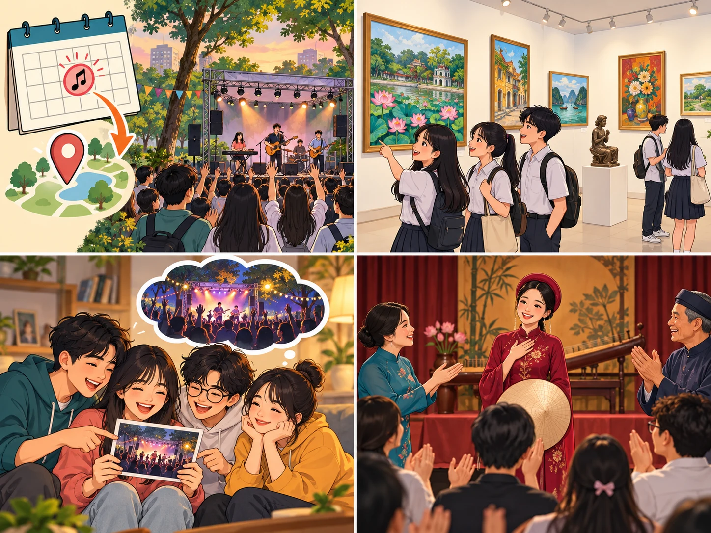
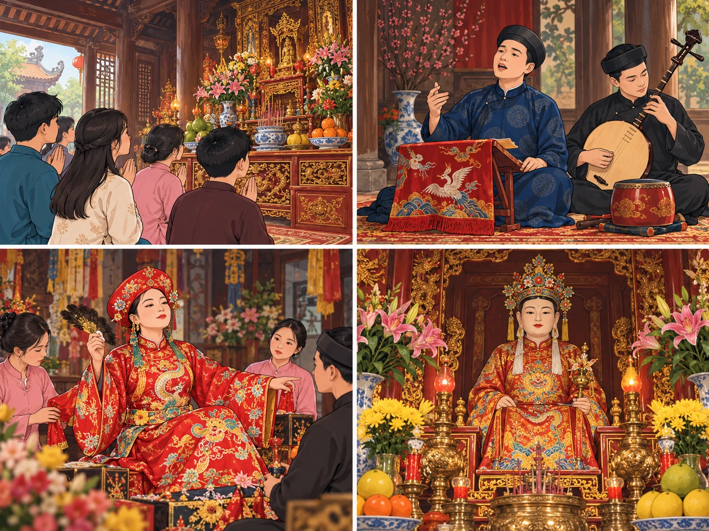

Communication and Culture
Lesson 7 — Suggestions · chau van singing
3Five stops in 45 minutes
- 🎶
Warm-up
Traditional music
4 min - 💬
Everyday English
Making suggestions
13 min - 🔤
Words
Six culture words
5 min - 📖
Culture
Chau van singing
16 min - 🙊
Game
Don’t say the word
5 min
By the end of this lesson…
- 💬
Suggestions
Make and respond to suggestions about going to a music show.
- 🗺️
Mind map
Read about chau van singing and complete a mind map.
- 🇻🇳
Culture
Say what you find most interesting about a Vietnamese tradition.
Traditional music
Warm-up · team race
4 minutesName types of traditional music in Viet Nam
Work in two teams. Which team can name more?
Hint: think of music from the north, the centre and the south. tuong · cai luong · cheo · ca tru · xam · quan ho · chau van …
Everyday English
Making and responding to suggestions
13 minutesAnn and Mai · 1–2
Box: A. How about B. I’d love to C. Shall D. Let’s
Ann and Mai · 2–3
Ann and Mai · 4
Check, then practise in pairs
(1) C. Shall we do something together?
(2) Yes, B. I’d love to.
(3) A. How about going to a music show?
(4) D. Let’s go to the Saturday show.
Making and responding to suggestions
Making suggestions
Shall we (do) …?
Why don’t (we) …?
What / How about …?
Let’s …
Responding
✓ Yes, I’d love to … · That’s a good idea.
✗ I don’t feel like it.
✗ I really want to … but …
Have similar conversations about going to a music show
- 🎸
Pop Night
Modern Arts Centre · Sat 7:30 p.m. · free entry
- 🎻
Indie Band Show
City Youth Club · Sun 6:00 p.m. · 50,000 VND
- 🪕
Traditional Music
Culture House · Fri 8:00 p.m.
Stronger pairs: refuse the first suggestion politely, then make a new one.
Words for chau van
Culture · before you read
5 minutes
praise
(v) /preɪz/ ca ngợi People praise the singers after the performance.
worship
(v, n) /ˈwɜːʃɪp/ thờ cúng; sự thờ cúng People worship gods and saints at the temple.chanting
(n) /ˈtʃɑːntɪŋ/ sự tụng, ngâm theo nhịp We heard chanting during the traditional ceremony.psychic
(n) /ˈsaɪkɪk/ người lên đồng, ông/bà đồng The psychic wears a colourful ritual costume.saint
(n) /seɪnt/ thánh A saint is honoured in the traditional ceremony.costume
(n) /ˈkɒstjuːm/ trang phục biểu diễn The performer wears a red costume.Chau van singing
Culture · page 35
16 minutesChau van singing · paragraphs 1–2
Chau van singing is an ancient form of Vietnamese performance art which combines singing and dancing. It started in the Northern Delta region of Viet Nam around the 16th century, and later spread to all parts of the country. It is used to praise gods or national heroes.
There are several types of chau van singing. One typical type is hat tho or worship singing – the slow chanting including an act of worship. Another type is hat hau – the singing and dancing of a psychic.
Chau van singing · paragraphs 3–5
The main musical instruments used in chau van performance are the moon-shaped lute, bamboo clappers, drum, and gong.
The costumes of chau van performers are very important. The style of clothes, hats, and belts depends on the rank of the gods or saints the performers worship. It has changed over time, but the rules about the colours have stayed the same.
As a form of traditional performance art, chau van singing was recognised as part of Vietnamese national culture.
Chau van singing – an ancient form of Vietnamese performance art
Origin — when / where around the 16th century · in the Northern Delta region of Viet Nam
Types (2) hat tho (worship singing) · hat hau
Main instruments (4) moon-shaped lute · bamboo clappers · drum · gong
Costumes (3) clothes · hats · belts
Find the words in the passage
1. ancient c
2. spread a
3. typical b
4. rank e
5. gods d
a. be known by, or be used by more and more people
b. having the usual qualities of a particular type of person or thing
c. very old; having existed for a very long time
d. spirits believed to have power over a part of nature
e. the position that somebody has in an organisation or society
What do you find most interesting about chau van singing?
I find … most interesting because …
I was surprised that … · What impressed me most was …
Example What I find most fantastic about chau van is that the psychic’s costumes are very colourful, and the style of clothes, hats and belts depends on the rank of the gods or saints.
Don’t say the word!
Game · describe the culture words
5 minutesWhat have you learnt today?
Today’s board
Suggestions: Shall we …? · Why don’t we …? · How about …? · Let’s … → Yes, I’d love to. / I don’t feel like it.
Chau van: 16th century · Northern Delta · hat tho, hat hau · lute, clappers, drum, gong · costumes
Homework: workbook Unit 3; prepare Lesson 8 — Looking back and Project (pages 36–37).